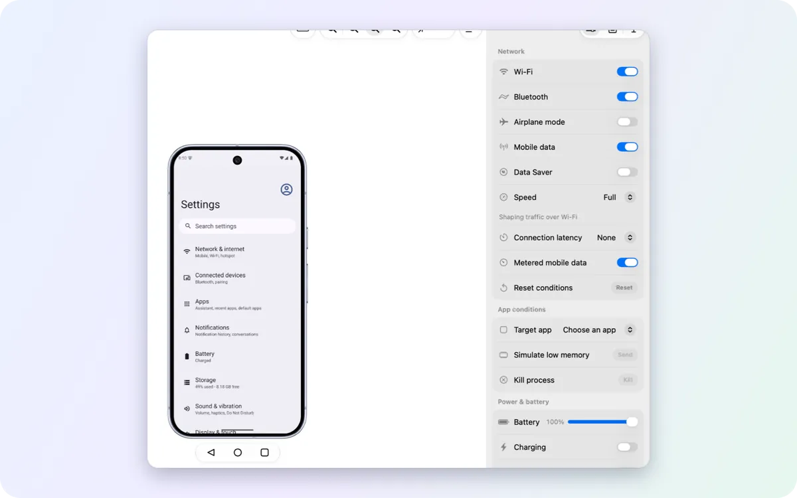
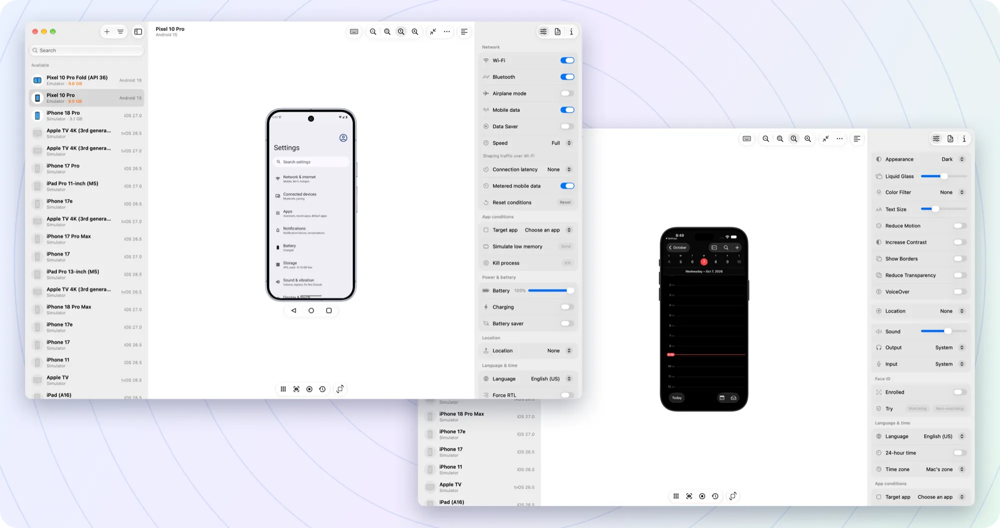
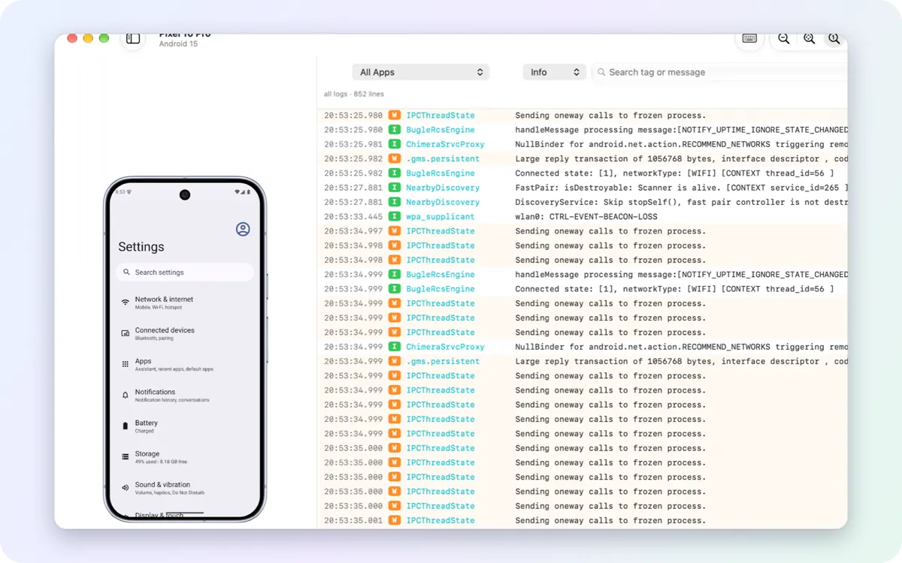
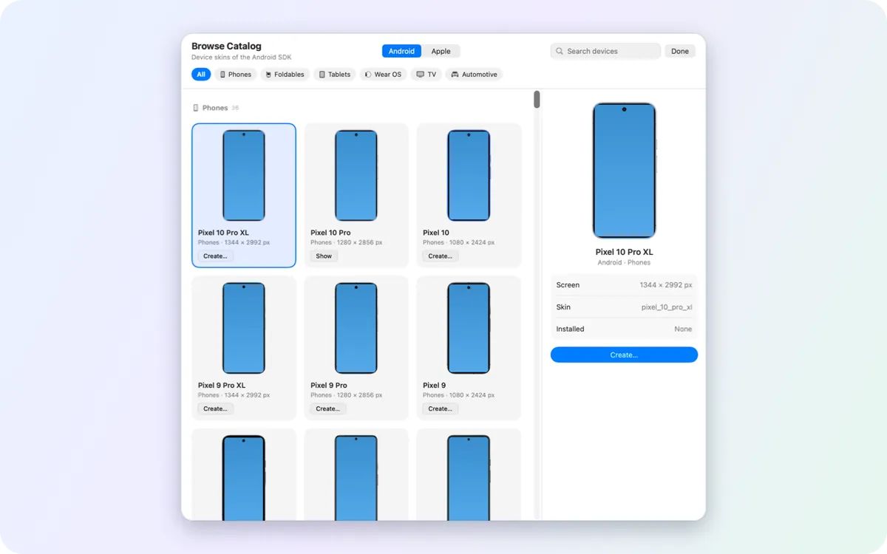
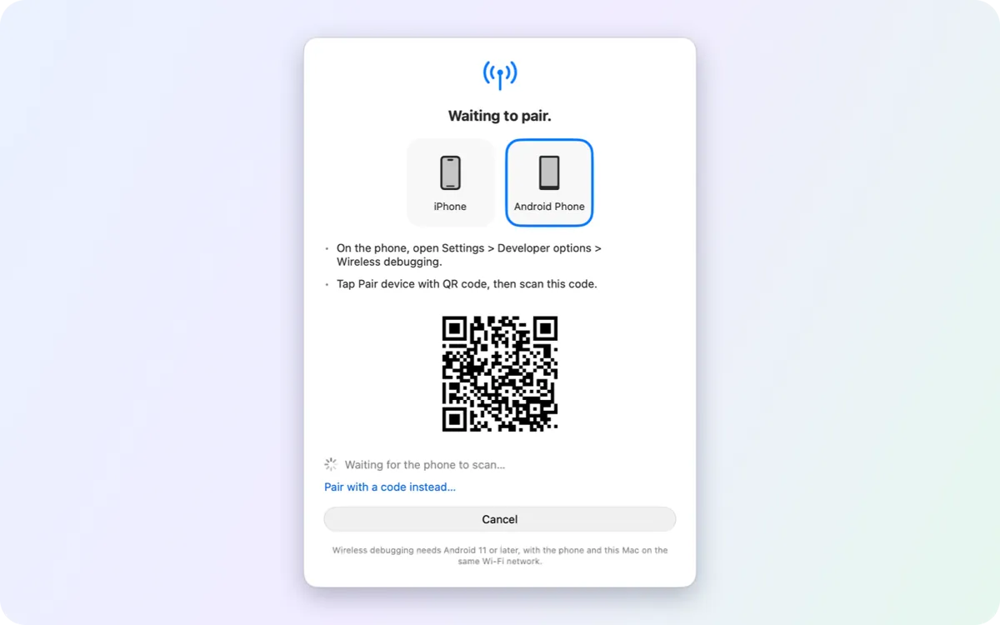

Controls
Network, battery, location, dark mode, text size, language and accessibility. Each change is read back from the device, so the panel shows what the device really did.
Mirror and control Android emulators, Android phones, iOS simulators and iPhones in one window. Change their settings, capture them and read their logs without leaving it.

Pick a posture or drag the hinge to any angle. Your app sees a real fold, not a jump, and the 3D model turns with the lit panel facing you.
Every device you have sits in one list. Switch from a Pixel emulator to an iPhone simulator and keep the same tools, menus and shortcuts.

Network, battery, location, dark mode, text size, language and accessibility. Each change is read back from the device, so the panel shows what the device really did.

Logcat and simulator logs, filtered by app, level or text, with crashes highlighted. Log focus (⌥⌘L) puts the phone and a wide log side by side.

Create any Pixel phone, tablet or foldable, or a Wear OS, TV or Automotive emulator. System images download in the background while you keep working.

Pair an Android phone by QR code or pairing code. It stays on Wi-Fi and mirrors like a cabled one.
Each row changes the device's own setting and shows what the device reports back. Rows a device can't take are not shown.
| Setting | Android | iOS Simulator | iPhone |
|---|---|---|---|
| Display | |||
| Dark or light appearance | |||
| Text size | |||
| Reduce motion, show borders | |||
| Liquid Glass, reduce transparency | – | ||
| Clean status bar for store screenshots | – | ||
| Accessibility | |||
| TalkBack / VoiceOver | |||
| Color filters for color blindness | |||
| Increase contrast | |||
| Network and power | |||
| Wi-Fi, Bluetooth, airplane mode, mobile data | – | – | |
| Network speed and latency | emulator | – | – |
| Battery level, charging, battery saver | – | – | |
| Location, language and time | |||
| Simulated location | |||
| Routes: city run, bike ride, freeway drive | emulator | – | |
| Device language | – | ||
| Time zone, 24-hour time | – | ||
| Date and time, force right-to-left | – | – | |
| App testing | |||
| Open a link or deep link | |||
| Low memory / memory warning | – | ||
| Kill a background process | – | – | |
| Push notifications, app permissions | – | – | |
| Fingerprint / Face ID and Touch ID | emulator | – | |
| Root certificates, keychain reset | – | – | |
Save a set of settings as a profile (Screenshots, Dark Mode, Accessibility Stress, Defaults) and apply it to several devices at once. Every setting in detail →
Yes. It is free and open source under the MIT license. It has no accounts, no analytics and no telemetry.
No. On first launch Device Hub Pro installs Google's official command-line tools, platform-tools and emulator for you, in the folder Android Studio uses, so Studio can share them later. It needs no administrator password.
For Android phones, yes. Phones are mirrored and controlled through scrcpy's server over adb, by cable or Wi-Fi, and decoded by the Mac's hardware video decoder. The same window also shows emulators, iOS simulators and iPhones, with device settings, logs and capture next to the screen.
It is inspired by Xcode's Device Hub and works alongside it, with the same layout and shortcuts plus Android devices in the same window. iOS simulators need Xcode installed. Device Hub Pro is an independent project, not affiliated with Apple.
Yes, after you turn on physical Apple devices in Settings and enable the iPhone. Over USB you see its live screen, and the mouse and keyboard reach the phone. Pairing and Developer Mode are set up in Xcode. The live view and fast input use private Apple interfaces and can be turned off.
Yes. With Xcode 27.1 the iPhone Duo simulator folds from the window: Closed, Tent, Laptop, Partially Open and Open, or any angle on the hinge slider. Where your Xcode ships Apple's 3D model of the device, Device Hub Pro draws it in 3D and you can turn it around. More about iPhone Duo.
macOS 26 or later on an Apple silicon Mac.
Yes. Select several devices, Android and iOS mixed, and set the appearance, text size, language, location or a clean status bar on all of them, or apply a saved settings profile.
Some iOS features (simulator touch, iPhone fast input and live view) use private Apple interfaces. Each can be turned off, and a macOS or Xcode update may break them for a while.